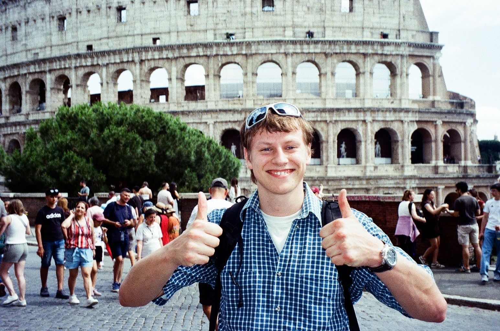
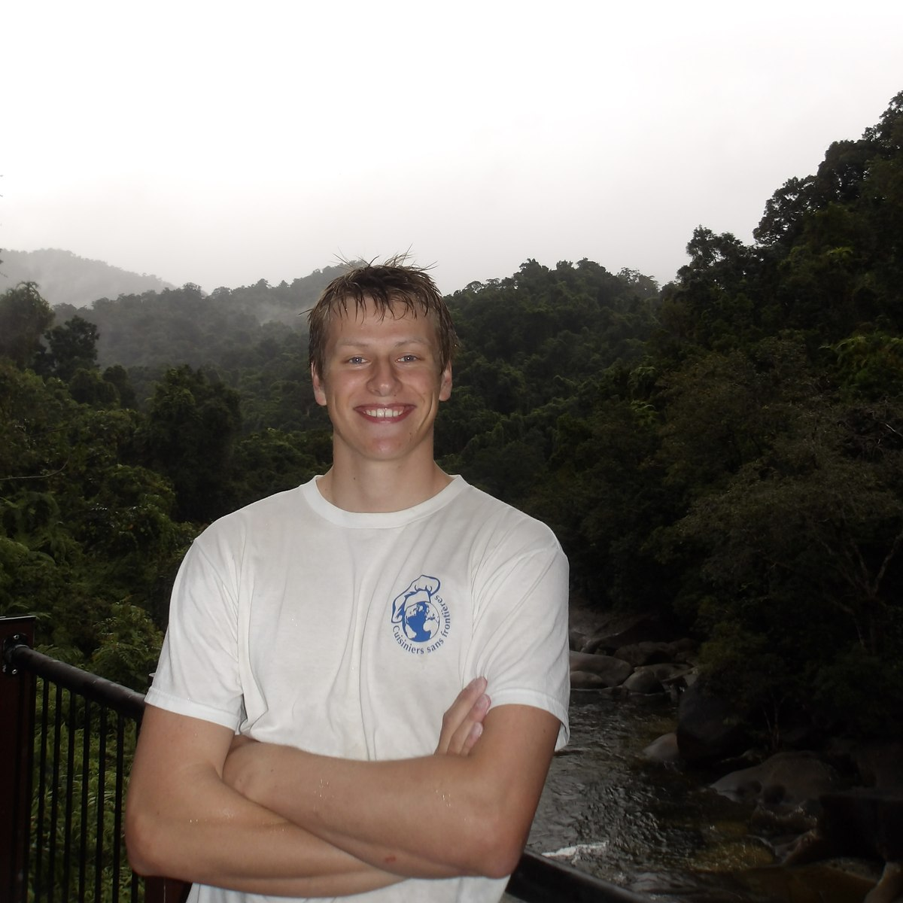
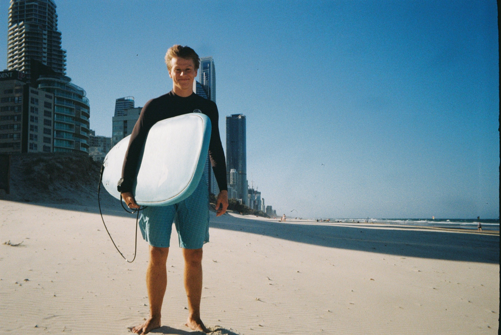

Hei, jeg heter Christian og er en UX-designer og utvikler som er veldig fornøyd med at jeg valgte å ikke studere biologi!
Jeg er veldig glad i å lære, og liker å kunne utforske sosial teori gjennom praktisk arbeid. Jeg er veldig interessert i de utallige elementene som påvirker brukeropplevelsen, og hvordan disse kan tas i betraktning på så mange forskjellige måter for å løse det samme problemet.
Det som motiverer meg med UX, er muligheten til å gjøre dypdykk i de helt spesifikke brukskontekstene til en niche målgruppe, og utvikle produkter som er tilpasset akkurat deres situasjon.
Det er på dette nivået drømmejobben min ligger, og jeg håper jeg også for muligheten til å drive med design-forskning en gang.
Hva gjør jeg ellers?
Hobbyer og InteresserNår jeg ikke er i min naturlige posisjon litt for nærme skjermen med krumm rygg, finner du meg i gang med noe nytt, om det enten er surfing, baking eller å bygge et kaffebord.
Jeg elsker å utforske nye hobbyer og prøver meg fram på det meste jeg finner til en rimelig pris (helst gis bort på finn). Av de interessene som har vedvart står Surfing, Tegning, Baking og Telting stadig på agendaen.
